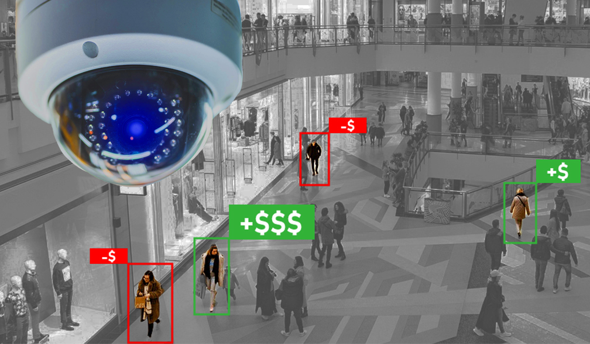

ALPRs (automatic license plate readers) are doing more than just scanning your car and recording when you went by them. They build a profile of your car, of you as a driver. Cam #1 "learns" that you go down Banana Rd. every Monday - Friday at 8:30 am. Cam #2 learns that you also go down Strawberry Rd. the same day at 8:45 am.
Maybe you go down those roads on your way to work? Maybe there isn't enough cameras to pinpoint that, unless there's another camera right near your job. But let's say you consistently drive by the same stores/restaurants on those roads. The ALPRs scan your license to figure out who you are, see what businesses you drive by, and if these algorithms can successfully find your social media, you can get targeted advertisements for the businesses that you drive by.
Maybe just a few ads don't sound so bad. But this is a group of machines that not only knows who you are and where you go, but may know all of your driving patterns (depending on how many cameras you go by), where you work, wherever else you like to go, and can trace back to your digital footprint.
What if you drive a luxury car....something fancy? Well you're more likely to pay more money for things, at least on the internet. Because all of these things go into how much you're willing to pay and be charged. Sound far fetched? It's a fact that people who buy plane tickets on MacOS get charged more for the same flight then people on Windows. The reason is because it's often assumed that people who can afford a Mac have more money to spend, and all of these apps and websites can read your operating system information.
I know that at first, it seems like these Flock cameras and other adjacent brands just are spying on who goes by them, but they're connected to a system building a profile OF YOU.
A lot of people have heard of China's Social Credit System. Where basically, through surveillance, a profile is built of people on how "role model of a citizen" they are. Too much time playing games? Too much drinking? Not enough working? Criticizement of the Government? Your score goes down and it becomes harder for you to afford things or you may even be denied access to things.
But the idea that China's government is "uniquely" evil is pretty far from the truth. A lot of things about them, you could say about America, except America does things in a capitalist way instead of a government-concentrated way, (also we have some gunz and some "freedom of speech" written on paper that most places don't, so there IS that...I guess.)
If through you using a more expensive computer, or through you driving a fancier car, they build a profile of you as someone who can spend more money, how else could they contribute to that information? Stores like Walmart have facial recognition cameras, they could easily see the branded clothes that someone is wearing, and judging by how they're dressed, build a profile of them as someone who can spend more money.
Facial recognition cameras already scan your face, attempt to find you on social media, and give you advertisements based off of what you bought, where you went, etc. Now it's going from ads to a profile of you as a consumer. The grand American Capitalist Credit System--has a nice ring to it.
Hmmmmmmmm, as opinionated as I am, I can't think of too many solutions to fix this systemtically when considering how capital controls a lot of legislation. I think that as an individual, erasing your social media accounts, at least the big tech ones, is a good start. And if you really want to have them, I'd use a different username/PFP and find other ways to not share your personal info.
I guess you can try to shop at smaller and local places that don't have money invested in all of these surveillance tactics, although I know that with this economy, people need to compromise and do what they need to in order to get by.
I'm personally not too optimistic about where all of this is going, except for one thing. A lot of people hate these surveillance cameras. Even if people don't know the full depth of evil that is transpiring, people don't like them in concept already. We need to speak up, me and my writings are just a small part, people need to share the word, voice their opinions, and protest when and if possible.
 Return to main page
Return to main page